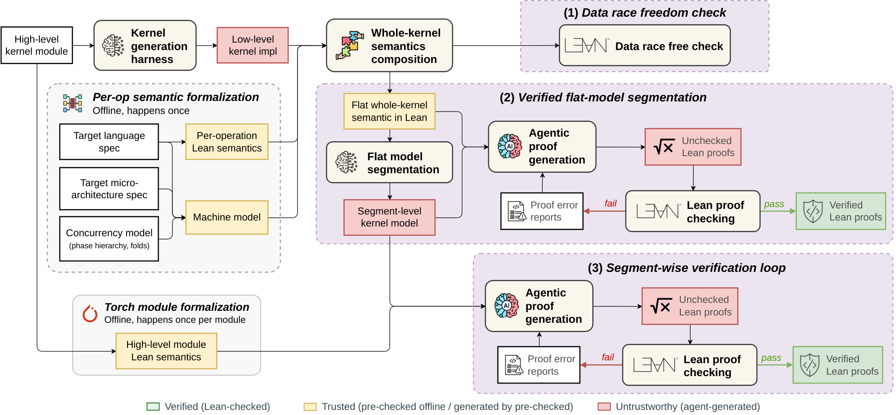

Formalizes a GPU machine model and PTX/CUDA/HIP operation semantics in Lean 4; LLM agents write Lean proofs of kernel equivalence to PyTorch specifications.
Abstract
Efficient GPU kernels are typically low-level and hardware-specific, and LLM agents can now generate them faster than experts can verify. Existing approaches rely on testing, which provides evidence but not a guarantee of correctness. We introduce LARK, an agentic framework that automatically and formally verifies GPU kernels against their PyTorch reference implementations. LARK proves equivalence in functional and memory behavior under exact arithmetic and establishes a new trust boundary: human effort is only needed to verify operator-level Lean semantics ahead of kernel generation time, instead of checking every single line of generated code. LARK formalizes the GPU machine model and the semantics of each operation in Lean 4 once per target language, and the Lean 4 semantics of any incoming kernel is derived from these pre-built definitions. LLM agents then automate the proof in two steps. First, an agent decomposes the whole kernel semantics into smaller segments and Lean 4 verifies this segmentation, which addresses the intractability of proving equivalence for large kernels directly. Second, agents write Lean proofs that each kernel segment matches its high-level PyTorch counterpart. Together, the two steps give whole-program equivalence. We demonstrate that LARK can be used 1) to ensure correctness in existing code-generation agents and 2) to automatically verify human-written kernel libraries. On the KernelCraft GPU tasks, combined with a simple ReAct agent, LARK enables GLM 5.3 to fully verify 10 of 12 Level-1 kernels and Opus 5.5 all 5 Level-2 kernels. Moreover, over 10 production kernels randomly sampled from popular open-source LLM serving frameworks, LARK verifies 9 and identifies a new data race bug in the tenth. We believe LARK represents a significant step toward verifiable code generation in the agentic era.
Problem
LLM agents can generate GPU kernels faster than experts can verify them. Existing checks rely on testing, which gives evidence of correctness but no guarantee.
Approach
LARK formalizes a GPU machine model and per-operation semantics in Lean 4 once per target language (PTX, CUDA, HIP). A translator derives each incoming kernel's Lean semantics from these fixed definitions. Agents then segment the kernel semantics, and Lean checks that the segmentation is correct. Agents next prove each segment equivalent to the tensor-level PyTorch reference under exact arithmetic, with race freedom, fault freedom and termination proved as obligations.

Figure 3: The LARK pipeline. Offline, the machine model and per-operation semantics are formalized once per target language and measured against the hardware, and the Torch module once per module. Per kernel, the translator composes the flat whole-kernel semantics in Lean, then three Lean-checked stages follow: (1) the race-freedom check; (2) an agent segments the flat model and proves the segment
Results
On KernelCraft, GLM 5.3 fully verifies 10 of 12 Level-1 kernels and Opus 5.5 verifies all 5 Level-2 fused kernels on PTX. Of 10 production kernels sampled from open-source LLM serving frameworks, 9 verify. The tenth, a softmax kernel from llm.c, is rejected because of a previously unknown data race.
Target
GLM 5.3
GLM 5.3 Flash
DeepSeek V4.1 Flash
GPT-6 Luna
PTX
83%
58%
25%
25%
CUDA
75%
50%
25%
25%
HIP
83%
50%
25%
25%
KernelCraft Level 1 pass rates by target language and model